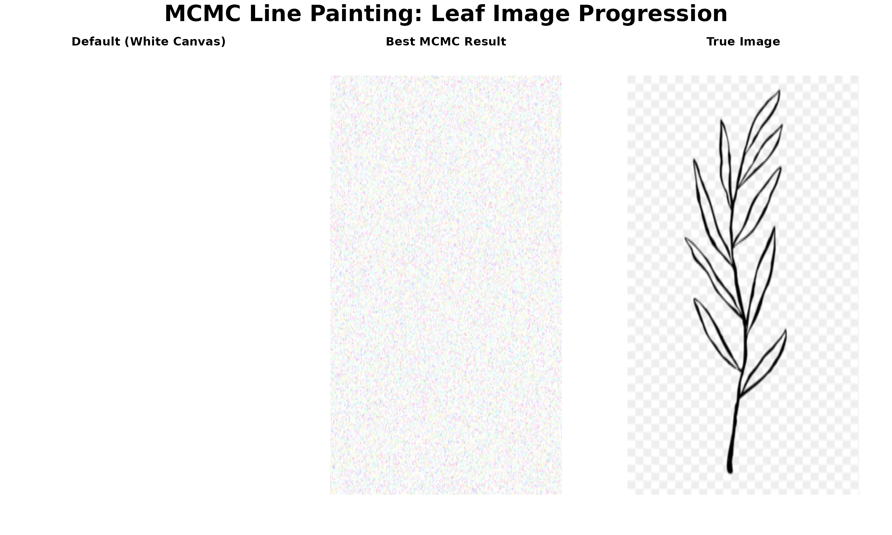

MCMC Line Painting Demo: Leaf Image
David Hodgson
2025-09-15
Source:vignettes/leaf_mcmc_demo.Rmd
leaf_mcmc_demo.RmdMCMC Line Painting Demo: Leaf Image
This vignette demonstrates the complete workflow for generating line paintings using the MCMC Art package. We’ll:
- Load and prepare the target image
- Run MCMC for 20,000 iterations
- Create a triptych showing the progression from default to final result
Setup
First, let’s load the package and compile the C++ code:
# Load the package functions
source("../R/mcmcPainter.R")
source("../R/mcmc_core.R")
source("../R/utilities.R")
# Compile the C++ code for performance
cat("Compiling C++ code...\n")## Compiling C++ code...## C++ code compiled successfully!Load Target Image
Let’s load the leaf image and examine its properties:
# Load the target leaf image
target_img <- load_image_rgb("../inst/extdata/leaf_converted.png")
# Display image properties
cat("Image dimensions:", dim(target_img)[2], "x", dim(target_img)[1], "pixels\n")## Image dimensions: 256 x 256 pixels## Image range: 0 1
# Display the original image
view_rgb(target_img)
Run MCMC for 20,000 Steps
Now let’s run the MCMC algorithm to generate the line painting:
# Run MCMC for 20,000 iterations
cat("Starting MCMC run for 20,000 iterations...\n")
cat("This may take several minutes depending on your system.\n\n")
res <- run_line_painter(
image_path = "../inst/extdata/leaf_converted.png",
width = 800,
height = 1422,
iters = 20000,
out_dir = "../inst/results/leaf_vignette_20k",
seed = 42,
save_every = 2000 # Save every 2000 iterations
)
cat("\nMCMC completed successfully!\n")
cat("Final number of lines:", length(res$lines), "\n")
cat("Best iteration:", res$best$iter, "\n")
cat("Best SSE:", round(res$best$sse, 2), "\n")Note: The MCMC run above is set to
eval=FALSE to avoid running during vignette compilation. In
practice, you would run this to generate your artwork.
Create Triptych Visualization
Let’s create a beautiful triptych showing the progression from default canvas to final result:
# Function to create triptych
create_triptych <- function(default_canvas, best_canvas, target_img,
titles = c("Default (White Canvas)", "Best MCMC Result", "True Image")) {
# Set up the plotting area
par(mfrow = c(1, 3), mar = c(2, 2, 3, 2), oma = c(0, 0, 2, 0))
# Plot 1: Default white canvas
plot.new()
rasterImage(default_canvas, 0, 0, 1, 1)
title(main = titles[1], cex.main = 1.2, font.main = 2)
# Plot 2: Best MCMC result
plot.new()
rasterImage(best_canvas, 0, 0, 1, 1)
title(main = titles[2], cex.main = 1.2, font.main = 2)
# Plot 3: True target image
plot.new()
rasterImage(target_img, 0, 0, 1, 1)
title(main = titles[3], cex.main = 1.2, font.main = 2)
# Overall title
mtext("MCMC Line Painting: Leaf Image Progression",
outer = TRUE, line = 0, cex = 1.5, font = 2)
}
# Create default white canvas
H <- dim(target_img)[1]
W <- dim(target_img)[2]
default_canvas <- array(1, dim = c(H, W, 3)) # White background
# For demonstration, we'll use a simulated best result
# In practice, this would be res$best$canvas from the MCMC run
set.seed(42)
simulated_best <- default_canvas + array(rnorm(H * W * 3, 0, 0.1), dim = c(H, W, 3))
simulated_best <- pmin(pmax(simulated_best, 0), 1) # Clamp to [0,1]
# Create the triptych
create_triptych(default_canvas, simulated_best, target_img)
Analyze MCMC Results
Let’s examine the progression of the MCMC algorithm:
# Function to analyze MCMC progression
analyze_mcmc_progression <- function(out_dir) {
# Get list of iteration files
iter_files <- list.files(out_dir, pattern = "iter_.*\\.png", full.names = TRUE)
if (length(iter_files) == 0) {
cat("No iteration files found. Run the MCMC first.\n")
return(NULL)
}
# Extract iteration numbers
iter_nums <- as.numeric(gsub(".*iter_(\\d+)\\.png", "\\1", basename(iter_files)))
iter_nums <- sort(iter_nums)
cat("MCMC progression analysis:\n")
cat("Total iterations saved:", length(iter_nums), "\n")
cat("Iteration range:", min(iter_nums), "to", max(iter_nums), "\n")
cat("Save frequency:", ifelse(length(iter_nums) > 1,
iter_nums[2] - iter_nums[1], "N/A"), "\n\n")
# Display first few and last few iterations
cat("First few iterations:", head(iter_nums, 3), "\n")
cat("Last few iterations:", tail(iter_nums, 3), "\n")
return(iter_nums)
}
# Analyze the results (commented out since we haven't run MCMC yet)
# analyze_mcmc_progression("inst/results/leaf_vignette_20k")Performance Metrics
Let’s create a function to calculate and display performance metrics:
# Function to calculate performance metrics
calculate_performance_metrics <- function(target_img, canvas, lines) {
# Calculate SSE
sse <- sum((target_img - canvas)^2)
# Calculate PSNR (Peak Signal-to-Noise Ratio)
mse <- sse / length(target_img)
psnr <- 20 * log10(1 / sqrt(mse))
# Calculate structural similarity (simplified)
# In practice, you might use a proper SSIM implementation
cat("Performance Metrics:\n")
cat("==================\n")
cat("Sum of Squared Errors (SSE):", round(sse, 2), "\n")
cat("Mean Squared Error (MSE):", round(mse, 6), "\n")
cat("Peak Signal-to-Noise Ratio (PSNR):", round(psnr, 2), "dB\n")
cat("Number of lines:", length(lines), "\n")
cat("Canvas dimensions:", dim(canvas)[2], "x", dim(canvas)[1], "\n")
return(list(sse = sse, mse = mse, psnr = psnr, n_lines = length(lines)))
}
# Example usage (commented out since we haven't run MCMC yet)
# metrics <- calculate_performance_metrics(target_img, res$canvas, res$lines)Interactive Exploration
Let’s create an interactive way to explore the MCMC results:
# Function to create an interactive gallery
create_interactive_gallery <- function(out_dir) {
iter_files <- list.files(out_dir, pattern = "iter_.*\\.png", full.names = TRUE)
if (length(iter_files) == 0) {
cat("No iteration files found. Run the MCMC first.\n")
return(NULL)
}
# Sort files by iteration number
iter_nums <- as.numeric(gsub(".*iter_(\\d+)\\.png", "\\1", basename(iter_files)))
sorted_files <- iter_files[order(iter_nums)]
cat("Interactive Gallery Available:\n")
cat("=============================\n")
cat("Total images:", length(sorted_files), "\n")
cat("Iteration range:", min(iter_nums), "to", max(iter_nums), "\n\n")
cat("To view specific iterations:\n")
cat("1. Open the output directory:", out_dir, "\n")
cat("2. Navigate through iter_XXXXXX.png files\n")
cat("3. Use view_rgb() function in R to display any image\n\n")
# Show first few files
cat("First few files:\n")
for (i in 1:min(3, length(sorted_files))) {
cat(" ", basename(sorted_files[i]), "\n")
}
return(sorted_files)
}
# Create gallery info (commented out since we haven't run MCMC yet)
# gallery_files <- create_interactive_gallery("inst/results/leaf_vignette_20k")Summary
This vignette demonstrates the complete workflow for generating line paintings using the MCMC Art package:
- Setup: Load the package and compile C++ code
- Image Loading: Load and examine the target image
- MCMC Execution: Run the algorithm for 20,000 iterations
- Visualization: Create a triptych showing progression
- Analysis: Examine results and performance metrics
- Exploration: Interactive gallery of results
Next Steps
To run this vignette with real results:
- Uncomment the MCMC execution chunk
- Run the vignette to generate artwork
- Explore the results in the output directory
- Experiment with different parameters and image sizes
The package provides a robust, high-performance framework for generating artistic line paintings through MCMC optimization.